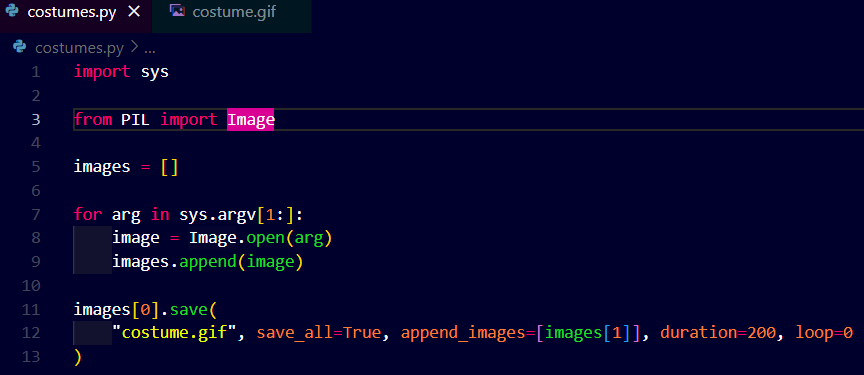

Here is another library that allows us to play with images.
The Pillow library: PIL the python imaging library
pillow.readthedocs.io
You can apply filter on images, animate them and do many more things using python.
Now we will write a program to create a gif file: it is nothing but an animated image, which is basically like a short video file, it is a simply a file with number of images coming together.
Now here we are going to create an animated gif of a cat running by using only two images, these images come from a programming language from MIT called scratch, which allows you ro very dynamically animate images to create gifs and other things using programming.
We will toggle back and forth these two images endlessly to create a gif which we can then send to a friend.!!!
Here it goes!

So the command below says that run code from costumes.py but append the costume1.gif and costume2.gif for creating another costume.gif.
Nothing happens in the terminal but in the folder a costume.gif is created with running cat gif wth a duration of 200miliseconds and looping infinitely.

I am updating/continuing this file nearly after 6 days, because I encountered an error = ModuleNotFoundError , the reason was silly, I hadn't used the exact name of the module in the code to be used, means I used pillow, Pil, etc to use the module into the code but I should have used PIL instead.
The output is stored in the file costume.gif (click here), as it is a gif we can only see a static image here, but I have provided the link here already.
That's it for the pillow library.